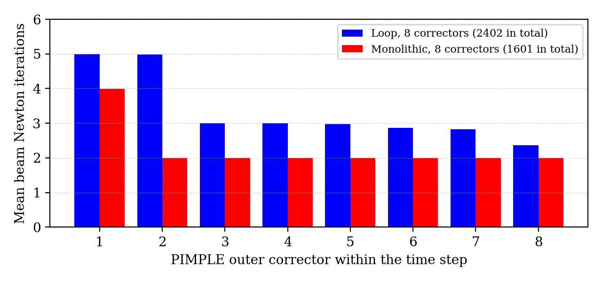
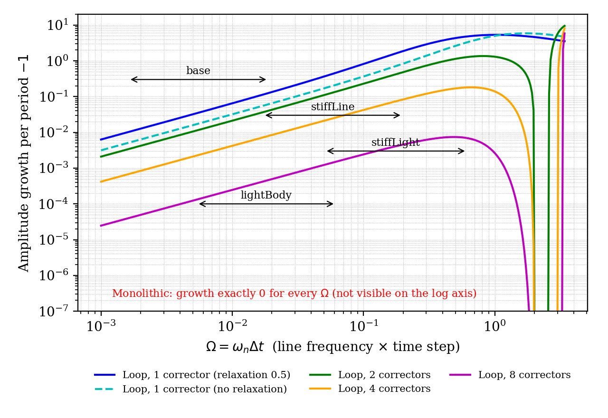

The name is used for two different loops, so it helps to separate them first:
| Loop | Set by | What it repeats |
|---|---|---|
| PIMPLE outer corrector | nOuterCorrectors in system/fvSolution (PIMPLE) |
The whole interFoam time step: mesh motion (body and beam), then α, U and p. This document is about this loop. |
| beamFoam Newton iteration | nCorrectors 200 (the maximum) in constant/beam/beamProperties |
One Newton–Raphson iteration of the beam (or beam + body) system. The counter is called iOuterCorr() in the
code, but it is a Newton iteration. The log line N: Converged reports N of them for one beam solve. |
for each time step n → n+1
for each PIMPLE outer corrector k = 1 … nOuterCorrectors
if (k == 1 or moveMeshOuterCorrectors) mesh.update() ← body + beam
moorFV motion solver: fluid force on body, then solver.solve(firstIter = (k == 1))
beamFoam evolve(): Newton iterations until converged ← "N: Converged"
solve α, U, p
interFoam.C:112 (if (pimple.firstIter() || moveMeshOuterCorrectors) mesh.update(););
sixDoFRigidBodyMotionFvBeamSolver.C:212–268
moveMeshOuterCorrectors yes is needed for any coupling iteration. Without it, correctors
2 … N repeat only the fluid solve. The body and beam are updated once per step whatever nOuterCorrectors is.
The _nOuter8 cases set both.On the first call in a time step, moorFV stores the start-of-step body state
(motion_.newTime(): motionState0_ = motionState_). Every later corrector updates the body
from that stored state (xn, vn, an), not from the previous corrector. In the monolithic path,
beamFoam's rigidBodyEnd::newTimeStep() does the same once per time index. So repeating a corrector re-solves the
same step with updated forces; it never advances time twice.
FvBeamNewmark), corrector kupdateAcceleration calls the finiteVolumeBeam restraint
before the body is moved. The beam end is set to the body's current position: on corrector 1 that is the end of the last
step, xn; on corrector k it is x(k−1). beamFoam then solves the beam at time tn+1.
finiteVolumeBeam.C:277–286, 349accelerationRelaxation 0.5).
sixDoFRigidBodyMotionFvBeam.C:306–333static bool first). On corrector 1 of every later step, a(0) is the previous step's
acceleration an. With one corrector the body therefore uses a = 0.5 a* + 0.5 an: half of the new
acceleration and half of the old. This is a lag on top of the lagged beam force. Resetting it on
firstIter would be a one-line change in moorFV; it hasn't been made.beamFoamCoupled), corrector ksolveMonolithic runs beamFoam's Newton iteration on the beam
equations and the body's Newmark residual
R = m a(x) + c v(x) − Fext − m g + Qb(x)
together, in one BlockEigen system. The Newmark relations are applied from the stored start-of-step state, so the beam force is implicit.
The Newton iteration starts from the previous corrector's solution.From the base tutorial logs (88–89 time steps to t = 0.25 s; air only, so the fluid force is small):

rigidBodyAndBeam_loop_nOuter8
and rigidBodyAndBeam_beamFoamCoupled_nOuter8.| Case | Beam solves | Newton iterations | Per step | Run time (s) |
|---|---|---|---|---|
| Loop, 1 corrector | 88 | 439 | 5.0 | 359 |
| Monolithic, 1 corrector | 88 | 351 | 4.0 | 359 |
| Loop, 8 correctors | 712 | 2402 | 27.0 | 2219 |
| Monolithic, 8 correctors | 712 | 1601 | 18.0 | 2219 |
Newmark with β = 1/4 and γ = 1/2 (average acceleration, the trapezoidal rule) has three properties:
These hold only when the end-of-step acceleration an+1 is consistent with the end-of-step position xn+1, that is, when the scheme is solved implicitly for every stiff force. The outer correctors control whether this is true for the beam force.
The line seen by the body is modelled as a linear spring k on a mass m. The line's own mass is about 1.5×10−4 kg against a 15 kg body, so the spring needs no mass. The model is then advanced with exactly the update order in §2, giving a 3×3 amplification matrix on (x, v, a). The important number is Ω = ωnΔt, where ωn = √(k/m).

| Scheme | Stability | Accuracy |
|---|---|---|
| Loop, 1 corrector | Unstable for every Ω. The beam force lags the displacement, which acts as negative damping. Growth per period is about e2πΩ with relaxation 0.5 and eπΩ without it: 13% per period at Ω = 0.02, rising to about ×6 at Ω ≈ 1. Phase 0 measured +15% per period for one-pass partitioned coupling, which matches. | First order: the local error falls 4× when Δt is halved. |
| Loop, K correctors | Fixed-point iteration towards the implicit solution, with contraction factor ρ = |1 − ωr(1 + βΩ²)|, where ωr is the relaxation factor. With ωr = 0.5 and small Ω, ρ ≈ 0.5: the error halves per corrector, as seen in the part 1 runs. The iteration diverges within the step if Ω > 2√3 ≈ 3.5 (ωr = 0.5) or Ω > 2 (no relaxation). The leftover growth falls about 2× per corrector; 7–11 correctors are needed for growth below 0.1% per period. | Tends to second order as K increases, but stays first order with a small coefficient for any finite K. |
| Monolithic, any number of correctors | |λ| = 1 exactly for every Ω: no growth and no numerical damping from the beam–body coupling. | Second order: the local error falls 8× when Δt is halved. |
The only explicit term left in the monolithic path is the fluid force (and any other restraint). Each extra corrector re-solves the step from the stored start-of-step state, using the latest fluid force. With converged correctors, the body's Newmark scheme is then implicit in all forces. In air the fluid force barely changes between correctors, which is why one corrector already agrees with eight to about 3×10−4 of the peak displacement (Phase 4, part 1). In water, a light body with a large added mass would need more correctors, as any partitioned fluid–structure scheme does; that is separate from the beam coupling.
The beam has its own scheme. This tutorial uses d2dt2Schemes default Euler in system/beam/fvSchemes, so the
beam's inertia is integrated with a first-order, dissipative Euler scheme, while the body uses Newmark β = 1/4, γ = 1/2.
beamFoam's Newmark predictor and coefficients apply only when the beam's scheme is Newmark. The line's mass is tiny here, so
this barely affects the body. With a heavy line it would add numerical damping to the line's own waves, whatever the coupling.
stiffLine (E × 100): Ω ≈ 0.02–0.2, period about 0.32 s.stiffLight (also m ÷ 10): Ω ≈ 0.05–0.6, period about 0.1 s, so about 2.5 periods in the run.Measured (tutorials/rigidBodyAndBeam_stress; maximum force error against monolithic with 8 correctors,
as a fraction of its peak):
| Variant | Loop, 1 | Monolithic, 1 | Loop, 8 | Growth of the loop-1 error over the run |
|---|---|---|---|---|
stiffLine | 4.3e-2 | 4.6e-4 | 1.9e-4 | ×39 |
stiffLight | 1.2e-1 | 3.4e-3 | 2.2e-4 | ×15 |
stiffLargeDt (maxCo 1) | 1.5e-1 | 5.1e-4 | 6.2e-4 | ×115 |
moveMeshOuterCorrectors yes) when fluid added mass matters. Correctors after the first cost a fluid solve plus 2 Newton iterations.Model script: amplification matrices for the update order in §2; growth per period = ρ2π/Ω. Newton counts are from
N: Converged lines grouped by PIMPLE: iteration k; run times are the final ExecutionTime.